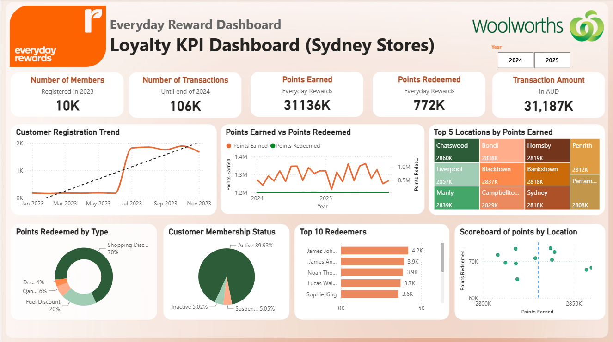
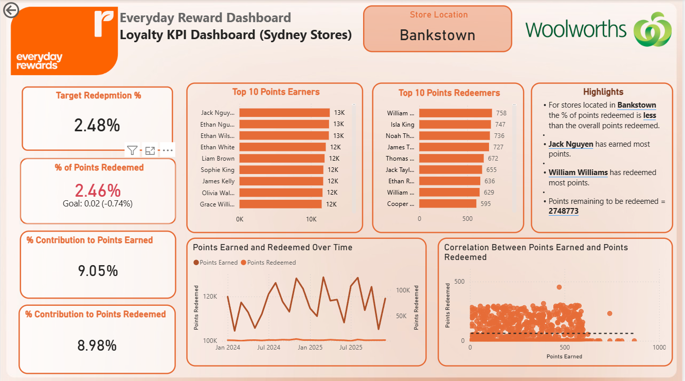

Dashboard Overview

Executive dashboard showing customer registrations, transaction activity, points earned, points redeemed, membership status, reward categories and store performance.
Store Drill-Down Analysis

Store-level report showing redemption performance, customer contribution, top points earners, top redeemers and points activity over time.
Business Objective
The objective of this project was to transform simulated Everyday Rewards customer, transaction and loyalty data into an interactive Power BI dashboard that provides a clear view of customer engagement and loyalty program performance.
The dashboard was designed to help stakeholders analyse customer registration growth, purchasing activity, points earned and redeemed, reward preferences, membership status and store-level performance across Sydney locations.
A separate drill-down page was created to allow users to investigate individual stores and identify differences in redemption behaviour, customer activity and loyalty engagement.
Key Insights
- The loyalty program recorded approximately 10,000 registered members, showing strong customer participation.
- More than 106,000 transactions were analysed, representing approximately $31.2 million in transaction value.
- Customers earned approximately 3.1 million loyalty points, while around 772,000 points were redeemed, indicating an opportunity to improve reward utilisation.
- Approximately 89.9% of customers were active members, demonstrating a high level of ongoing loyalty participation.
- Shopping discounts accounted for around 70% of reward redemptions, making them the most popular reward category.
- Store-level analysis revealed differences in points earned and points redeemed across Sydney locations.
- The drill-down report identified the highest points earners and redeemers within each selected store.
- Some locations showed strong points earning but lower redemption rates, highlighting opportunities for store-specific campaigns.
Business Recommendations
- Target customers with high points balances but low redemption activity through personalised reminders and limited-time reward campaigns.
- Use shopping discounts as a core loyalty incentive because they represent the most frequently selected reward category.
- Investigate lower-performing stores and compare their loyalty strategies with locations showing stronger redemption performance.
- Introduce store-specific reward campaigns in locations with high points earned but lower points redeemed.
- Develop targeted offers for top points earners to strengthen retention and long-term program engagement.
- Use membership status data to identify inactive or suspended members and develop customer re-engagement campaigns.
- Monitor registration, transaction and reward trends regularly to evaluate the effectiveness of loyalty initiatives.
Outcome
The project transformed raw customer loyalty and transaction data into an interactive Power BI reporting solution that provides both an executive-level overview and a detailed store-level analysis.
The dashboard allows stakeholders to monitor customer engagement, reward utilisation, purchasing activity, membership status and location performance through clear KPI cards, interactive filters and drill-down visualisations.
The final solution supports informed decisions relating to customer retention, targeted marketing, reward planning and store-level loyalty performance.
Key Performance Indicators
Approach
- Reviewed the simulated customer, transaction, reward, membership and store datasets to identify the fields required for analysis.
- Used Power Query to clean the data, correct data types, standardise fields and prepare the tables for reporting.
- Built a structured data model by creating relationships between customer, transaction, reward, date and store tables.
- Developed DAX measures for customer registrations, total transactions, transaction value, points earned, points redeemed and membership percentages.
- Created KPI cards to provide an immediate summary of loyalty program performance.
- Built visualisations for registration trends, membership status, reward categories, points activity and store performance.
- Added year slicers so users could compare customer engagement and loyalty activity across reporting periods.
- Created ranking visuals to identify the top points earners and top reward redeemers.
- Developed a store drill-down page to analyse redemption percentage, customer contribution, customer rankings and points activity for individual locations.
- Applied dashboard design and data storytelling principles to create a clear, consistent and stakeholder-friendly reporting experience.